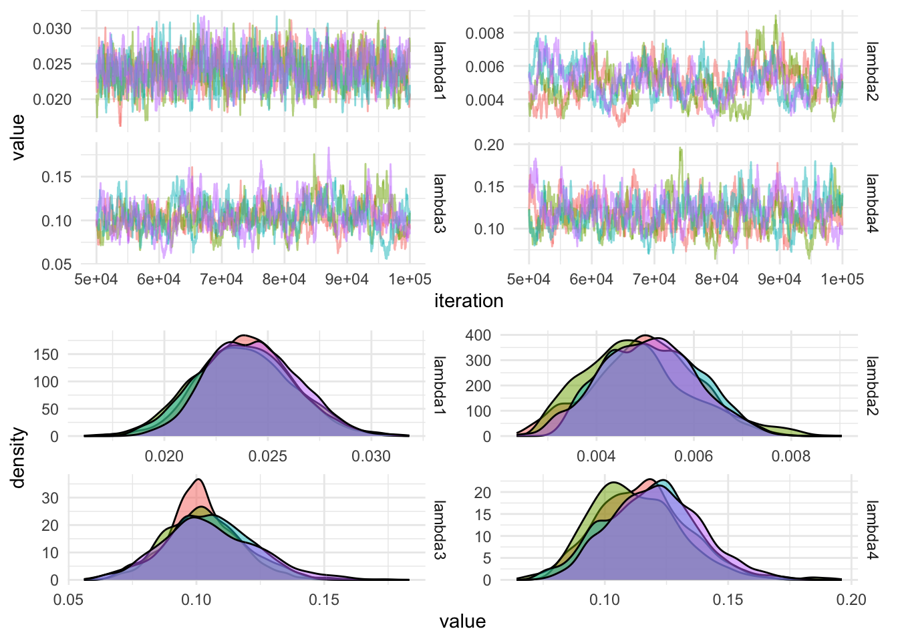

![]()

Multi-state models are used to model disease progression. The model is a continuous time Markov process. The states and time of transitions are fully observed. There are three states a patient can be in, “healthy”, “illness” and “deceased”. The possible pairs of transitions between these states include healthy -> illness, illness -> healthy, illness -> death and healthy -> death. The model can be expressed as a directed graph.
The state “Deceased” is an absorbing state, whereas the other two states are transient. This means we can’t transition away from the Deceased state.
The process is a Markov process, it has a transition kernel, \(p(x_{i,t_j}|x_{i,t_{j-1}}, \theta)\) which depends only on the previous state and some static parameters \(\theta\). The state for the \(i^{\text{th}}\) patient at time \(t_j\) is written \(x_{i,t_j}\). The parameters for the transition kernel populate the transition rate matrix. The rate matrix is the derivative of the transition kernel at \(t=0\)
\[\begin{aligned} Q &= \frac{d}{dt}P(t)\Bigr|_{\substack{t=0}} \\ &= \lim_{\delta t \rightarrow 0}\frac{P(\delta t) - P(0)}{\delta t} \\ &= \lim_{\delta t \rightarrow 0}\frac{P(\delta t) - I}{\delta t} \end{aligned}\]
Then we can rearrange for the transition kernel,
\[P(\delta t) = I + Q \delta t.\]
This gives the infinitesimal transition for a very small time increment. Using this result, we can solve for the transition kernel over a finite time
\[\begin{aligned} \frac{d}{dt}P(t) &= \frac{P(t + dt) - P(t)}{dt} \\ &= \frac{P(dt)P(t) - P(t)}{dt}\\ &= \frac{(P(dt) - I)}{dt}P(t)\\ &= QP(t). \end{aligned}\]
Then solve the resulting differential equation to see that \(P(t) = \exp(Qt)\), hence the transition matrix is the matrix exponential of the transition rate matrix. The transition rate matrix for this problem can be written as
\[ Q = \begin{pmatrix} -\sum_{j\neq 1}q_{1j} & q_{12} & q_{13} \\ q_{21} & -\sum_{j\neq 2}q_{2j} & q_{13} \\ 0 & 0 & 0 \end{pmatrix} \]
The non-zero elements of the rate-matrix are potential transitions. The final state is absorbing - hence we can’t transition from it.
Simulating Data from the Model
We can simulate forward using a grid of times, \(t_i = t_0, \dots, t_n\) where \(t_i - t_{i-1} = \Delta t\) is a small time increment, using the exact solution for the transition rate matrix \(P(\Delta t) = \exp(Q \Delta t)\).
- Sample the rate parameters from the prior distribution
- Construct a rate matrix from each sample
- Compute the matrix exponential and simulate forward conditional on the previous step
Forward simulation is drawing next state, \(x_t\) from a categorical distribution with probabilities from the row of the transition matrix corresponding to the state at time \(t-1\), \(P(\Delta t)_{x_{t-1}\cdot}\).
We use Gamma priors for the non-zero elements of the rate matrix:
\[\begin{aligned} q_{12} &\sim \textrm{Gamma}(3, 3/0.05)\\ q_{13} &\sim \textrm{Gamma}(3, 3/0.001)\\ q_{21} &\sim \textrm{Gamma}(3, 3/0.02)\\ q_{23} &\sim \textrm{Gamma}(3, 3/0.01) \end{aligned}\].
p1 <- jonnylaw::plot_pdf(dgamma, 3, 3/0.05, range = c(0, 0.5), title = "Gamma prior for q_{12}")
p2 <- jonnylaw::plot_pdf(dgamma, 3, 3/0.001, range = c(0, 0.1), title = "Gamma prior for q_{13}")
p3 <- jonnylaw::plot_pdf(dgamma, 3, 3/0.02, range = c(0, 0.2), title = "Gamma prior for q_{21}")
p4 <- jonnylaw::plot_pdf(dgamma, 3, 3/0.01, range = c(0, 0.1), title = "Gamma prior for q_{23}")
(p1 | p2) / (p3 | p4)# Sample from the prior for lambda
means <- c(0.05, 0.001, 0.02, 0.01)
lambdas <- purrr::map_dbl(means, ~ rgamma(1, shape = 3, rate = 3/.))The following function populates a rate matrix given a vector of hazards.
build_rate_matrix <- function(lambda, n_states = 3, n_absorbing = 1) {
q <- matrix(rep(0, times = n_states * n_states), byrow = TRUE, nrow = n_states)
k <- 1
for (i in 1:n_states) {
for (j in 1:n_states) {
if (i != j & i <= (n_states - n_absorbing)) {
q[i, j] = lambda[k]
k = k + 1
}
}
}
## fix the diagonal to be negative the sum of the remaining elements in the row
diag(q) = -rowSums(q)
q
}The next function can be used to simulate the process on a grid of times \(t_1, \dots, t_n\). The step-size between each realisation must be small enough to see any transitions.
# Simulate the markov chain
sim_markov <- function(lambdas, step_size, n_steps) {
state <- numeric(n_steps)
## Build the rate and transition matrices
rate_matrix <- build_rate_matrix(lambdas)
transition_matrix <- Matrix::expm(rate_matrix * step_size)
n_states <- nrow(rate_matrix)
# initial state is always healthy
state[1] <- 1
for (i in 2:n_steps) {
state[i] <- sample(x = n_states, size = 1, prob = transition_matrix[state[i-1], ])
}
tibble(time = seq_len(n_steps), state = state)
}set.seed(1)
lambdas <- matrix(replicate(n = 1000, purrr::map_dbl(means, ~ rgamma(1, shape = 3, rate = 3/.))), ncol = 4, byrow = TRUE)
replicates <- apply(lambdas, 1, function(x) sim_markov(x, 0.1, 50)) %>%
bind_rows(.id = "replicate")Simulating 1,000 trajectories for (50 * 0.1 = 5 days) transitions results in the following state transitions
replicates %>%
group_by(replicate) %>%
mutate(from = lag(state), to = state) %>%
drop_na() %>%
count(from, to) %>%
arrange(to) %>%
pivot_wider(names_from = "to", values_from = "n", values_fill = 0) %>%
group_by(from) %>%
summarise_at(vars(`1`:`3`), sum) %>%
arrange(from)# A tibble: 3 × 4
from `1` `2` `3`
<dbl> <int> <int> <int>
1 1 43000 227 1
2 2 11 5700 2
3 3 0 0 59Instead of simulating on a fine grid we can use discrete event simulation to simulate the exact process:
- Given the initial state is \(i\)
- Simulate the time to the next event, \(t \sim \text{Exp}(-q_{ii})\)
- Simulate the next state by simulating from a distribution with pmf \(q_{ij} / q_{ii}, i \neq j\)
- Return the sample path if we have landed in an absorbing state, \(q_{ii} = 0\)
sim_exact <- function(x, Q, n) {
xs = numeric(n + 1)
ts = numeric(n)
r = nrow(Q)
t = 0
ts[1] <- t
xs[1] = x
for (i in seq_len(n)) {
t <- t + rexp(1, -Q[x, x]) # Sim time to next observation
weights <- Q[x, ] # Calculate the probability of transitioning away to another state
weights[x] <- 0 # We can't stay in the same state
x <- sample(r, 1, prob = weights) # Sample the next state
xs[i + 1] <- x # add to vector of states
ts[i + 1] <- t # add to vector of event times
if (Q[x, x] == 0) { # If the new state is an absorbing state then return event times
return(tibble(time = ts[seq_len(i + 1)], state = xs[seq_len(i + 1)]))
}
}
tibble(time = ts, state = xs) # Return event times without absorbing
}set.seed(42)
replicates <- apply(lambdas, 1, function(lambda) {
Q <- build_rate_matrix(lambda)
sim_exact(1, Q, 20)
}) %>%
bind_rows(.id = "replicate")
qs <- replicates %>%
group_by(replicate) %>%
mutate(from = lag(state), to = state) %>%
drop_na() %>%
count(from, to) %>%
arrange(to) %>%
pivot_wider(names_from = "to", values_from = "n", values_fill = 0) %>%
group_by(from) %>%
summarise_at(vars(`1`:`3`), sum) %>%
arrange(from) %>%
select(-1) %>%
as.matrix()
qs 1 2 3
[1,] 0 3019 80
[2,] 2150 0 869The figure below shows the mean time in each state with 66% and 95% credible intervals. This is calculated by sampling 1,000 rate matrices from the prior distribution and calculating \(1 / q_i = \sum_{j\neq i}q_{ij}\) using each sample.
lambdas %>%
as_tibble() %>%
rename(lambda1 = V1, lambda2 = V2, lambda3 = V3, lambda4 = V4) %>%
mutate(healthy = 1 / (lambda1 + lambda2),
illness = 1 / (lambda3 + lambda4)
) %>%
pivot_longer(healthy:illness, names_to = "state", values_to = "value") %>%
group_by(state) %>%
tidybayes::median_qi(value, .width = c(0.66, 0.95)) %>%
ggplot(aes(x = state, y = value, ymin = .lower, ymax = .upper)) +
tidybayes::geom_pointinterval() +
labs(x = "Days", title = "Distribution of the mean time in each state.") +
coord_flip()Warning: The `x` argument of `as_tibble.matrix()` must have unique column names if
`.name_repair` is omitted as of tibble 2.0.0.
ℹ Using compatibility `.name_repair`.
Simulating a real-world example
In a real world example patients are observed at a different number of times, \(n_i\) represents the number of state observations for patient \(i\). To simulate realistic data we will randomise the number of steps recorded for each “patient” using the exact algorithm. Let’s sample the number of steps uniformly between 1 and 5.
set.seed(1)
lambda <- c(0.05, 0.01, 0.2, 0.2)
names(lambda) <- paste0("lambda", 1:4)
Q <- build_rate_matrix(lambda)
sims <- purrr::map_dfr(
as.list(sample(5, size = 100, replace = TRUE)),
~ sim_exact(1, Q, .),
.id = "patient")The plot below shows patient journeys for patients 3, 11, 13 and 100. Patient 3 has only two observed state changes and censoring on the final state. Patient 11 has multiple observed transitions through illness and healthy, then a final transition to the absorbing state.
sims %>%
filter(patient %in% c(3, 11, 13, 100)) %>%
ggplot(aes(x = time, y = state)) +
geom_step() +
facet_wrap(~patient, scales = "free_x") +
labs(title = "Patient Journeys for Selected Patients")
We can write down the likelihood for the \(i^{\text{th}}\) patient with state transitions at times, \(t_{ij}, j = 0,\dots,n_i\)
\[\begin{aligned} p(X_{i,t_{0:n_i}}|Q) &= p(x_{i,0})\prod_{j=1}^{n_i}p(x_{i,t_j}|x_{i,t_{j-1}}, Q) \\ &= \prod_{j=1}^{n_i}\exp(Q(t_{ij} - t_{ij-1}))_{x_{i,t_j},x_{i,t_{j-1}}} \end{aligned}\]
The initial state is fixed at one and the transition kernel is given by the matrix exponential of the rate matrix. There is one problem with this likelihood: It does not incorporate censored paths.
A multi-state model such as this can be thought of as multiple survival models. I introduced Survival models in a previous blog post. In a survival model, the transition is governed by a hazard function. The hazard function for transitioning to state \(j\) from state \(i\) is
\[H_{ij}(t_1, t_2) = \int_{u=t_1}^{t_2} q_{ij}\, du = (t_2-t_1)q_{ij}.\]
The Survival function, \(Pr(T > t)\) is:
\[S_{ij}(t) = \exp(-H_{ij}(0, t)) = \exp(-tq_{ij})\]
The pdf is \(f_{ij}(t) = \frac{d}{dt}F_{ij}(t)\) where \(F_{ij}(t) = 1 - S_{ij}(t)\), hence \(f_{ij} = q_{ij}\exp(-tq_{ij})\).
Let’s consider the likelihood for patient 13.
sims %>%
filter(patient == 13) %>%
knitr::kable(digits = 2)| patient | time | state |
|---|---|---|
| 13 | 0.00 | 1 |
| 13 | 3.93 | 2 |
| 13 | 8.20 | 1 |
For each state transition all other possible transitions are considered censored. The data-frame for patient 13 can be re-written by first considering a data-frame of all possible transitions and determining which transitions end in an absorbing state.
possible_transitions <-
tibble(
from = c(1, 1, 2, 2),
to = c(2, 3, 1, 3),
absorbing = c(FALSE, TRUE, FALSE, TRUE)
)We can then create a “from” column representing the previous state of a transition, then left join the possible states using “from”. Observed states are when the “to” in both tables match, censored states are non-matching.
sims %>%
filter(patient == 13) %>%
mutate(from = lag(state)) %>%
rename(to = state) %>%
left_join(possible_transitions, by = "from") %>%
mutate(observed = to.x == to.y) %>%
knitr::kable(digits = 2)| patient | time | to.x | from | to.y | absorbing | observed |
|---|---|---|---|---|---|---|
| 13 | 0.00 | 1 | NA | NA | NA | NA |
| 13 | 3.93 | 2 | 1 | 2 | FALSE | TRUE |
| 13 | 3.93 | 2 | 1 | 3 | TRUE | FALSE |
| 13 | 8.20 | 1 | 2 | 1 | FALSE | TRUE |
| 13 | 8.20 | 1 | 2 | 3 | TRUE | FALSE |
This layout explicitly allows us to see which state transitions are observed and which are censored. Patient 13 starts in state 1, as do all patients. The first observation at time \(t = 3.92\) is a transition from \(1 \rightarrow 2\), illness - this observation implies a censored observation for the transition \(1 \rightarrow 3\). Then we transition from state 2 back to state 1 and never observe the terminal state.
\[\begin{aligned} p(X_{i=13,t_{0:3}}|Q) &= Pr(X_{t_1} = 2|X_{t_0} = 1)Pr(X_{t>t_1} = 3)Pr(X_{t_2} = 1|X_{t_1} = 2)Pr(X_{t>t_2} = 3) \\ &=f_{12}(t_1-t_0)S_{13}(t_1-t_0)f_{21}(t_2-t_1)S_{23}(t_2-t_1) \\ &=q_{12}\exp(-q_{12}(t_1-t_0))\exp(-(t_1-t_0)q_{13})q_{21}\exp(-q_{21}(t_2-t_1))\exp(-(t_2-t_1)q_{23}) \\ &= q_{12}q_{21}\exp(-q_{12}(t_1-t_0) -(t_1-t_0)q_{13} -q_{21}(t_2-t_1) -(t_2-t_1)q_{23}) \\ &= q_{12}q_{21}\exp(-(q_{12} + q_{13})(t_1-t_0) - (q_{21} + q_{23})(t_2-t_1)) \end{aligned}\]
The final line shows that the likelihood consists of the hazards of the observed transitions \(1 \rightarrow 2\) and \(2 \rightarrow 1\), multiplied by the exponential of the sum of the off-diagonal elements of the rate matrix multiplied by the total time those states have been observed.
This can be generalised:
\[p(X_{i,t_{0:3}}|Q) = \prod_{j=1}^3\prod_{k=1,k\neq j}^3q_{jk}^{n_{ijk}}\exp(-\tau_{ij}q_j)\]
Where \(q_j = \sum_{j=1,j\neq k}^3q_{jk}\), \(\tau_{ij}\) is the time in the \(j^{\text{th}}\) state for patient \(i\) and \(n_{ijk}\) is a matrix with a count of the number of transitions from state \(j\) to state \(k\). We can then calculate the likelihood for all patients:
\[\begin{aligned} p(\textbf{X}_t|Q) &= \prod_{i=1}^N\prod_{j=1}^3\prod_{k=1,k\neq j}^3q_{jk}^{n_{ijk}}\exp(-\tau_{ij}q_j)\\ &= \prod_{j=1}^3\prod_{k=1,k\neq j}^3q_{jk}^{n_{1jk} + \dots + n_{Njk}}\exp(-\sum_{i=1}^N\tau_{ij}q_j)\\ &= \prod_{j=1}^3\prod_{k=1,k\neq j}^3q_{jk}^{n_{jk}}\exp(-\tau_{j}q_j)\\ \end{aligned}\]
Where, \(n_{jk}\) is the sum of all \(N\) matrices representing the transitions \(j \rightarrow k\) and \(\tau_j\) is the total time spent in state \(j\) for all patients.
For reasons of numerical stability, the log-likelihood is used,
\[\begin{aligned} \log p(\textbf{X}_t|Q) &= \sum_{j=1}^3\sum_{k=1,k\neq j}^3\left(n_{jk}\log(q_{jk})-\tau_jq_j\right). \end{aligned}\]
Parameter Inference
The posterior distribution of the free parameters in the rate matrix is determined using a random walk Metropolis algorithm. The prior distribution for the rate parameters are independent Gamma distributions parameterised with shape, \(\alpha\) and rate, \(\beta\) such that the mean is \(\alpha/\beta\)
\[\lambda_i \sim \text{Gamma}\left(3, \frac{3}{0.01}\right), \quad i = 1,\dots,12.\]
The rate parameters are transformed to the log scale and the proposal distribution is a symmetric Normal distribution centered at the value of the previously accepted parameter at iteration \(k-1\)
\[\log\lambda_k \sim \text{MVN}(\log\lambda_{k-1}, I_{4}\delta), \quad \delta = 0.01.\]
where \(\delta\) is a tuning parameter of the MCMC and \(I_{4}\) represents the 4 dimensional identity matrix.
Calculate the total-time in each state.
time_in_state <- sims %>%
group_by(patient) %>%
mutate(total_time = lead(time) - time) %>% # Time in state
group_by(state) %>%
summarise(total_time = sum(total_time, na.rm = TRUE))
time_in_state %>% knitr::kable()| state | total_time |
|---|---|
| 1 | 2284.0808 |
| 2 | 189.7724 |
| 3 | 0.0000 |
tau <- time_in_state %>%
purrr::pluck("total_time")Calculate the matrix of observed transitions. Note that no transitions occur from state 3, the absorbing state.
observed_transitions <- sims %>%
group_by(patient) %>%
mutate(from = lag(state), to = state) %>%
drop_na() %>%
count(from, to) %>%
arrange(to) %>%
pivot_wider(names_from = "to", values_from = "n", values_fill = 0) %>%
group_by(from) %>%
summarise_at(vars(`1`:`3`), sum) %>%
arrange(from) %>%
select(-1) %>%
as.matrix
(observed_transitions <- rbind(observed_transitions, c(0, 0, 0))) 1 2 3
[1,] 0 107 21
[2,] 38 0 43
[3,] 0 0 0Program the log-likelihood, prior and proposal distribution.
## rate_matrix is the constructed rate-matrix
## tau is a vector containing total time in each state
## observed_transitions is a matrix with all observed transitions
## with the state from in the rows and state to in the columns.
log_likelihood <- function(rate_matrix, tau, observed_transitions) {
n_states <- nrow(rate_matrix)
qi <- - diag(rate_matrix)
sum(log(rate_matrix - diag(diag(rate_matrix))) * observed_transitions, na.rm = TRUE) - (n_states - 1) * sum(qi * tau)
}
log_prior <- function(lambda) {
sum(dgamma(lambda, shape = 3, scale = 3 / 0.1, log = TRUE))
}
proposal <- function(lambda) {
lambda * exp(rnorm(4, sd = 0.01))
}
log_posterior <- function(lambda) {
Q <- build_rate_matrix(lambda)
log_likelihood(Q, tau, observed_transitions) + log_prior(lambda)
}We are ready to sample from the posterior distribution of the rate parameters using the Metropolis algorithm. We run four chains in parallel using furrr as explained in my previous post on efficient MCMC in R.
iters <- jonnylaw::metropolis(
lambda,
log_posterior,
proposal,
m = 1e5,
chains = 4,
parallel = TRUE
)Registered S3 method overwritten by 'future':
method from
all.equal.connection parallellyWarning: package 'future' was built under R version 4.3.3Warning: package 'purrr' was built under R version 4.3.3Warning: UNRELIABLE VALUE: Future (NULL) unexpectedly generated random numbers
without specifying argument 'seed'. There is a risk that those random numbers
are not statistically sound and the overall results might be invalid. To fix
this, specify 'seed=TRUE'. This ensures that proper, parallel-safe random
numbers are produced. To disable this check, use 'seed=NULL', or set option
'future.rng.onMisuse' to "ignore".The posterior diagnostics are plotted below.
iters %>%
group_by(chain) %>%
mutate(iteration = row_number()) %>% ## Add iteration number
filter(iteration > 5e4) %>%
jonnylaw::thin(10) %>% ## Reduce things to plot
pivot_longer(-c("chain", "iteration", "accepted"), names_to = "parameter", values_to = "value") %>%
jonnylaw::plot_diagnostics()
The plot below shows posterior distribution of the mean time in each state, \(1 / q_i\). The blue points are the actual observed values of each patient.
time_in_state <- sims %>%
group_by(patient) %>%
mutate(total_time = lead(time) - time) %>%
mutate(state = case_when(
state == 1 ~ "healthy",
state == 2 ~ "illness",
TRUE ~ "deceased"
))
iters %>%
sample_n(1000) %>%
as_tibble() %>%
mutate(healthy = 1 / (lambda1 + lambda2),
illness = 1 / (lambda3 + lambda4)
) %>%
pivot_longer(c("healthy", "illness"), names_to = "state", values_to = "value") %>%
group_by(state) %>%
ggplot(aes(x = value, y = state)) +
geom_point(data = filter(time_in_state, state %in% c("illness", "healthy")), aes(x = total_time, y = state), alpha = 0.5, colour = "blue") +
tidybayes::geom_halfeyeh() +
labs(x = "Days", title = "Posterior distribution of the mean time in each state") Warning: 'tidybayes::geom_halfeyeh' is deprecated.
Use 'stat_halfeye' instead.
See help("Deprecated") and help("tidybayes-deprecated").Warning: Removed 36 rows containing missing values or values outside the scale range
(`geom_point()`).
Most applications of multi-state survival models have patient attributes associated with each patient. This can be used to inform the next transition and the time to the next transition. I will consider this in a future post.
In addition, fully observed processes are rare. If the exact time of a state transition is not known or multiple state transitions can happen between observations then the multi-state survival model is partially observed. A continuous time Hidden Markov Model can be used in this case.
Citation
BibTeX citation:
@online{law2020,
author = {Law, Jonny},
title = {Multi {State} {Models}},
date = {2020-04-19},
langid = {en}
}
For attribution, please cite this work as:
Law, Jonny. 2020. “Multi State Models.” April 19, 2020.